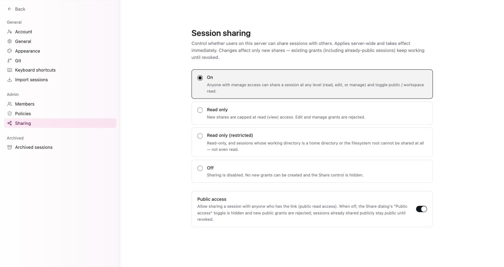

Inbox 通知與 Session 分享
為何需要本章
代理在別台機器上跑，你的分頁關著。它做完了、或是它卡住要問你一句話，你怎麼知道？
另一面是相反的問題：它做完了，結果很好，你想給同事看。你不想把整個帳號給對方，也不想截三十張圖貼進聊天室。
這兩件事在 Omnigent 裡是兩個獨立的機制。Inbox 負責把「需要你回應的事」收攏到一頁；分享則負責把「一條 session」以指定的權限交出去。這一章把兩者講清楚，特別是分享那一側——因為分享一旦給出去，收回來要另外動手。
核心觀念：一個往內收，一個往外送
先把兩個詞分開。它們在側邊欄上是不同入口，在設定裡也是不同分頁。
收件匣（Inbox）：側邊欄第三個入口，網址是 /inbox。它收的是需要你出手的事件。分享（Sharing）：把單一 session 的檢視或編輯權限交給別人的機制，管理員在設定的 Sharing 分頁決定整個工作區能分享到什麼程度。
| 面向 | Inbox | 分享 |
|---|---|---|
| 方向 | 別人或代理找你 | 你把東西交給別人 |
| 入口 | 側邊欄 Inbox（/inbox） | 單一 session 上的 Share 控制項 |
| 誰能調整規則 | 不需要設定，有事就出現 | 管理員在設定的 Sharing 分頁定上限 |
| 收回的方式 | 處理完就不再需要你 | 必須主動撤銷，不會自己過期 |

Inbox 實際上收什麼
空的 Inbox 會顯示兩句話，這兩句同時就是它的功能說明：
- 「Nothing waiting on you」
- 「When an agent needs your input or someone comments on a file, it will show up here.」
換句話說，會進到這一頁的只有兩類事：代理需要你的輸入（例如它要一個核准、或問你一個決定），以及有人在檔案上留言。純粹「跑完了」的通知不在這兩類裡面，所以看到 Inbox 是空的，通常代表沒有人在等你，而不是代理沒動。
Inbox 空著卻覺得代理應該問你什麼，先回到那條 session 看它的狀態。第 10 章會講到一個相關的坑：排程執行的任務如果用了會等核准的權限模式，它會一直等，而不是把問題送到你面前。
本書的實機記錄沒有涵蓋 Inbox 是否會另外寄電子郵件或推播。在確認之前，請把它當成要自己回來看的一頁，不要假設有人會通知你。
分享的三個層級與兩種對象
分享一條 session 時要決定兩件事：給多大的權限，以及給誰看。
權限由小到大是 read、edit、manage。對象則有兩種：公開（public）——任何拿到連結的人；以及工作區唯讀（workspace read）——這個工作區裡的成員可讀。
| 層級 | 拿到的人能做什麼 | 適合的場合 |
|---|---|---|
| read | 看這條 session 的內容 | 給同事看結果、附在工單裡當證據 |
| edit | 比 read 多一層，能動這條 session | 兩個人接力做同一件事 |
| manage | 最高層級，能再往外分享 | 把一條 session 整個交接出去 |
manage 的意思是對方也能繼續分享出去。給出 manage 等於放棄對「誰看得到」的控制權。除非是交接，否則預設給 read 就好。
管理員的四種 Session sharing 模式
上一節是單次分享的選擇；這一節是整個工作區的天花板。設定的 Sharing 分頁裡，Session sharing 有四段可選，由寬到嚴：
| 模式 | 實際效果 |
|---|---|
| On | 有 manage 權限的人可以用任何層級分享（read／edit／manage），也可以切換 public 或 workspace read |
| Read only | 新的分享上限就是 read；試著給 edit 或 manage 會被拒絕 |
| Read only (restricted) | 唯讀，而且工作目錄是家目錄或檔案系統根目錄的 session 完全不能分享 |
| Off | 停用分享，介面上的 Share 控制項會直接隱藏 |
另外有一個獨立的 Public access 開關，控制的是「能不能用一條連結公開唯讀分享」。關掉之後，Share 對話框裡的 Public access 切換會隱藏，新的公開分享會被拒絕。
四種模式與 Public access 開關只影響新的分享。設定頁原文寫得很清楚：「Changes affect only new shares — existing grants (including already-public sessions) keep working until revoked.」已經公開出去的 session，在你手動撤銷之前仍然是公開的。關掉開關不等於收回連結。
Read only (restricted) 那條限制值得多看一眼：它擋的是工作目錄設在家目錄或根目錄的 session。這種 session 的內容很可能夾帶跟本次工作無關的檔案路徑與內容，所以連唯讀都不給。這也是第 8 章建議「工作目錄選具體一點」的另一個理由。
開始之前
- 先確認你的角色。設定分頁分成個人、管理與封存三類，
Sharing屬於管理類。成員清單裡的角色只有Admin與Member兩種，Member 通常只能在管理員設定的天花板底下分享。 - 先看一眼你要分享的那條 session 的工作目錄。如果它是家目錄，在
Read only (restricted)模式下你根本分不出去，這不是壞掉。 - 先想好給誰。工作區內的同事用 workspace read 就夠；只有對方沒有帳號時才需要公開連結。
把一條 Session 安全地交出去
-
先確認工作區的天花板
管理員請到設定的
Sharing分頁，看Session sharing現在是四段中的哪一段，以及Public access是開還是關。一般成員看不到這頁，但你會直接感受到結果：Share 控制項不見了就是Off，只能選 read 就是Read only。 -
挑對層級，預設給 read
對方只是要看結果就給
read。要一起動手才給edit。manage留給真正的交接，因為拿到的人可以再分享給第三個人。 -
能用工作區內分享就不要開公開連結
workspace read 的對象是工作區成員，範圍收斂在你認得的人身上。公開連結的對象是「任何拿到網址的人」，它沒有辦法只給一個人。
-
分享之前先看一遍 session 內容
session 裡會有代理讀過的檔案內容、跑過的指令與輸出。分享等於把這些一起送出去。特別注意有沒有金鑰、密碼或客戶資料被貼進對話裡。
-
結案後主動撤銷
分享不會自己過期，管理員改政策也救不了已經發出去的連結。事情結束就回到那條 session 把授權撤掉，這是唯一會生效的方式。
怎麼確認做對了
- 在完全沒登入的瀏覽器（無痕視窗）貼上你剛產生的連結：如果你給的是公開唯讀，它應該打得開且只能看；如果你給的是工作區內分享，它應該要求登入。
- 撤銷之後再用同一個無痕視窗開一次，應該打不開了。這一步比「我已經按過撤銷」可靠。
- 管理員把
Session sharing調成Off之後，重新整理頁面，Share 控制項應該從介面上消失。 - 打開
/inbox，如果顯示「Nothing waiting on you」，代表目前沒有代理在等你回話。
故障排除
- Inbox 一直是空的：「Nothing waiting on you」是正常的空狀態，不是錯誤。這一頁只收兩類事：代理需要你的輸入、有人在檔案上留言。純粹跑完不會出現在這裡。
- 找不到 Share 控制項：管理員把
Session sharing設成了Off，這個模式會直接把控制項隱藏。找管理員確認，不用重新整理或換瀏覽器。 - 想給 edit，但只能選 read：工作區在
Read only模式下，新分享的上限就是 read，給 edit 或 manage 會被拒絕。這是政策不是故障。 - 某條 session 完全分不出去，別條可以：檢查它的工作目錄。
Read only (restricted)模式會讓工作目錄是家目錄或檔案系統根目錄的 session 完全不可分享。把工作目錄換成具體的專案資料夾重開一條，就能分享了。 - 已經關掉 Public access，舊連結還是打得開：這是設計行為。設定變更只影響新的分享，既有授權（包含已經公開的 session）在被撤銷前都繼續有效。要讓連結失效，只能到那條 session 上撤銷。
固定來源
Inbox 空狀態文案、Sharing 分頁四段模式與 Public access 的行為說明，來自 2026-09-09 對正式站的實機記錄，整理在本倉庫的 docs/research/ui-facts-2026-09-09.md。本章標示為「實機記錄未涵蓋」的段落，請以你畫面上的實際說明為準。
常見問題
代理跑完會不會寄信或推播通知我？
本書的實機記錄沒有涵蓋通知管道，所以這裡不做保證。可以確定的是 Inbox 這一頁只在兩種情況會有東西：代理需要你的輸入，或有人在檔案上留言。在你自己確認過通知設定之前，請把 Inbox 當成要主動回來看的一頁。
我是一般成員，可以自己改分享政策嗎？
不行。Sharing 屬於設定裡的管理類分頁，跟 Members、Policies 放在一起。成員清單上的角色只有 Admin 與 Member。你能做的是在管理員設定的天花板底下分享；感覺被擋住時，去找管理員確認現在是哪一段模式。
read、edit、manage 到底差在哪裡？
read 是看，edit 是能動這條 session，manage 是最高層級、拿到的人可以再把它分享給別人。實務上的判斷很簡單：只要對方不需要幫你把這條 session 往下做，就給 read。manage 只在交接時給。
公開連結會不會被搜尋引擎找到？
本書的實機記錄沒有涵蓋這一點，所以請用最保守的方式假設：任何拿到那串網址的人都能看到內容。這代表連結被轉貼、被貼進工單、被存進瀏覽器歷史，你都無從得知。需要控制對象時用工作區內分享，不要用公開連結。
我把分享模式改嚴了，之前發出去的連結會自動失效嗎？
不會。設定頁原文寫的是變更只影響新的分享，既有授權（包含已經公開的 session）在被撤銷之前都繼續有效。要讓舊連結失效，必須逐一到那些 session 上撤銷授權。把政策改嚴是止血，不是回收。